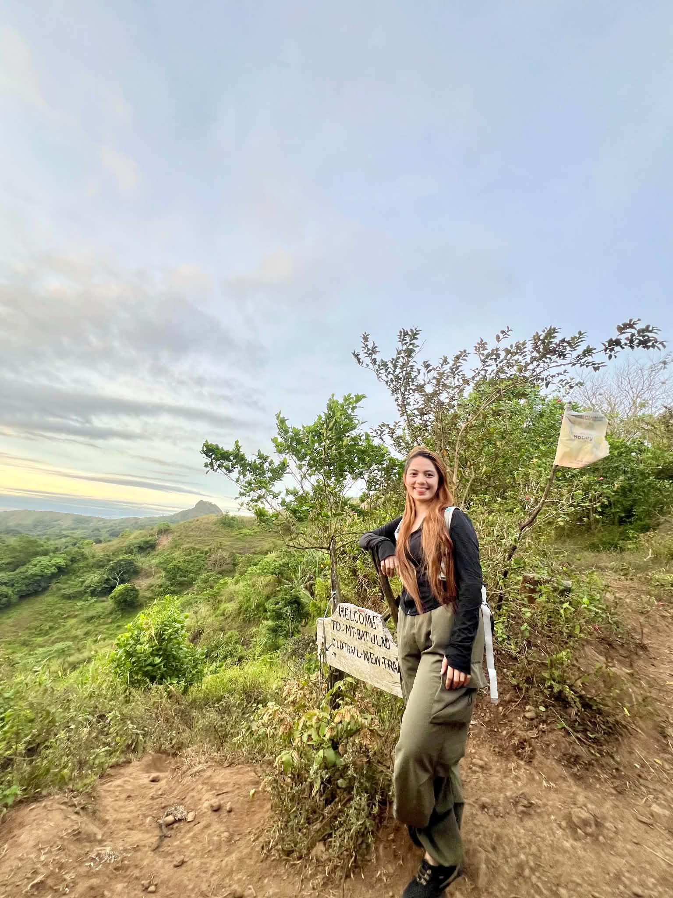
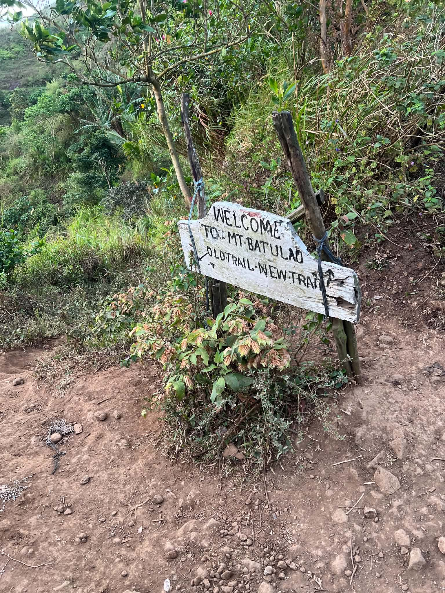
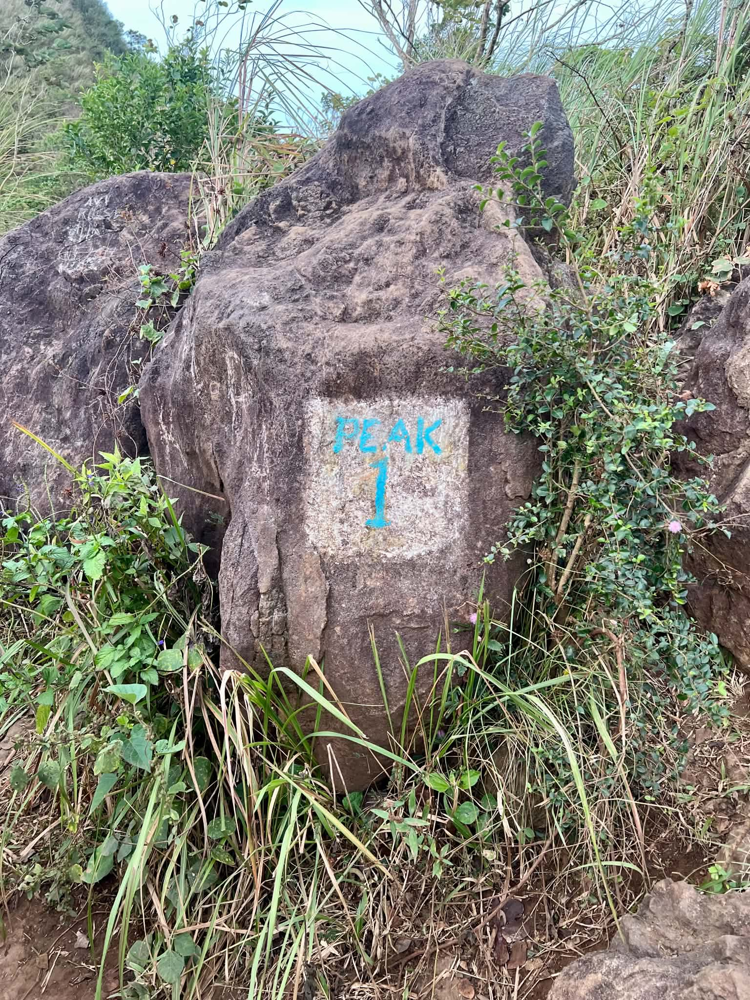
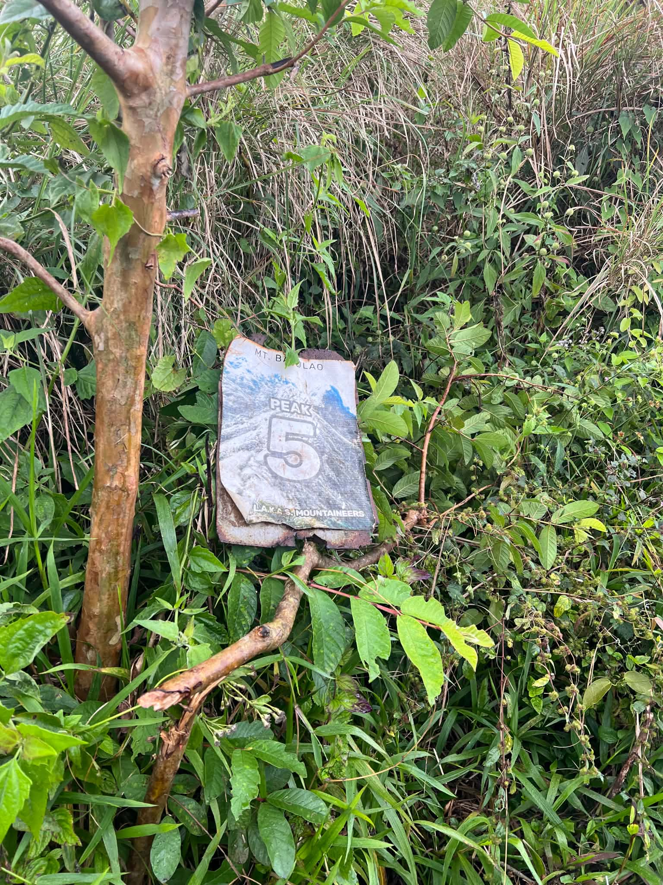
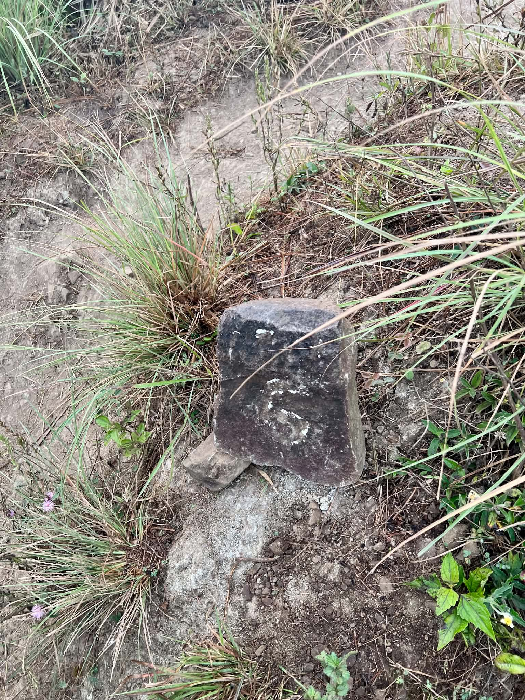
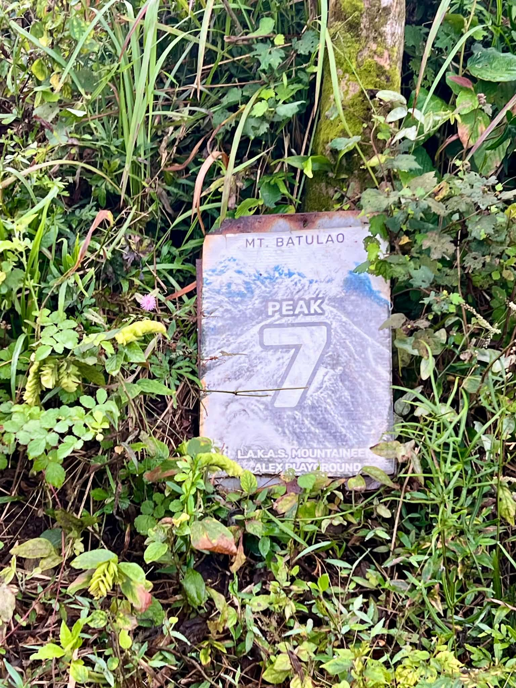
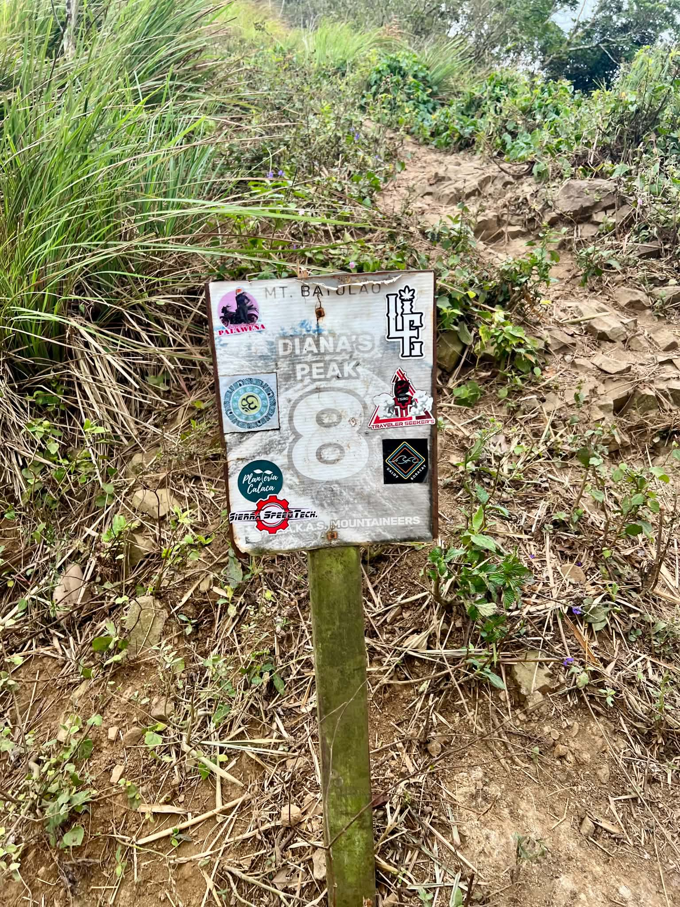
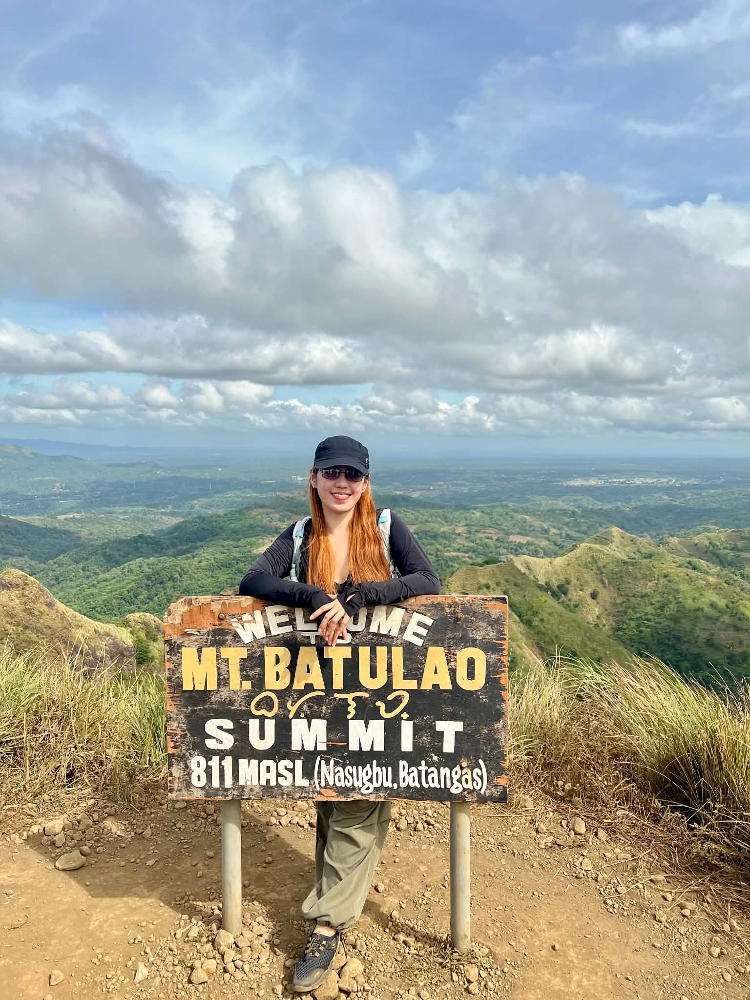
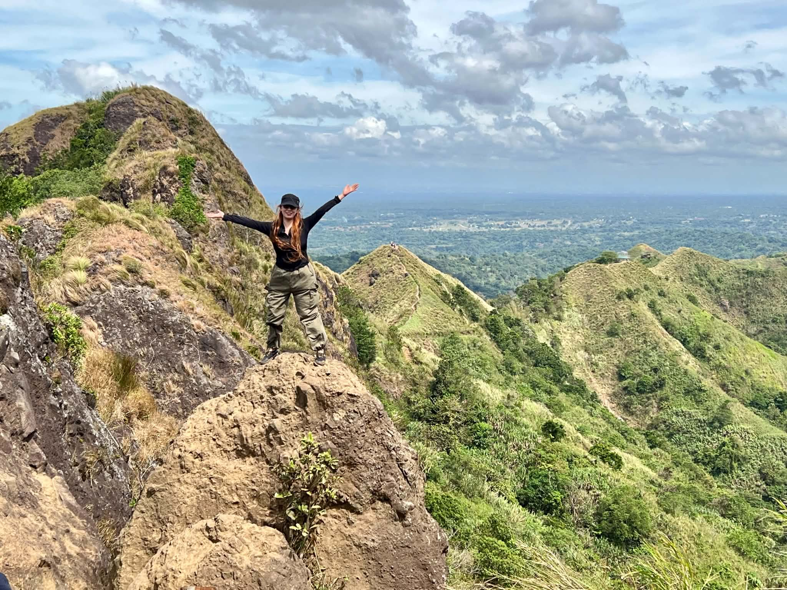
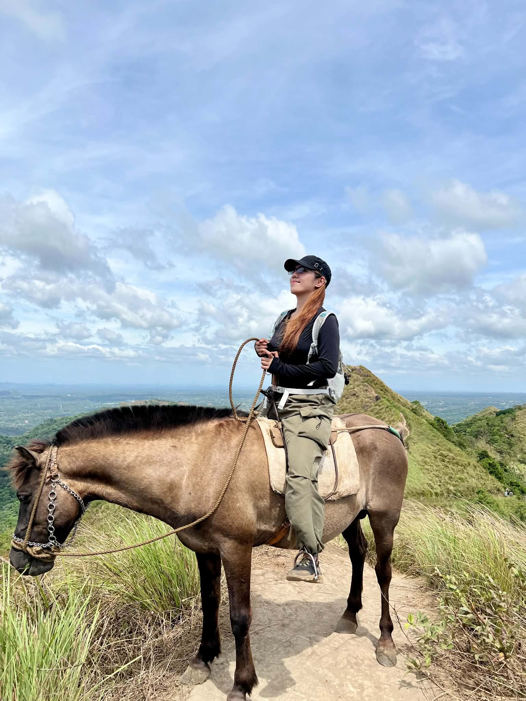

01
The Start
Welcome to Batulao
A hand-painted wooden sign. Green ridges stretching toward the horizon. This was going to be a good climb.





02
The Ascent
Peak by Peak
Numbered peaks scattered along the ridge — each marker battered with stickers from every hiker who came before.


03
The Summit
811 Meters Above
360 degrees of green pyramidal peaks. The flatlands of Batangas. Some views you just have to earn.


04
The Surprise
Horseback on the Ridge
Nobody warned me there'd be horses. An unexpected highlight that turned a great hike into something unforgettable.